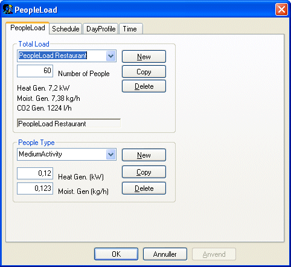
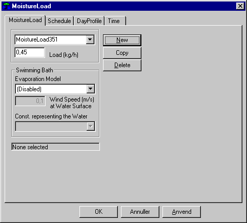
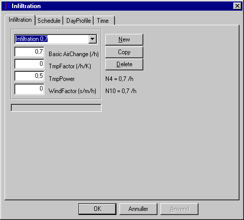
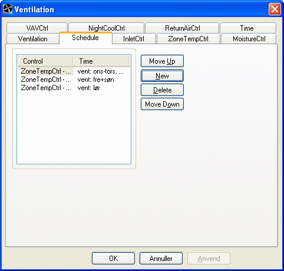
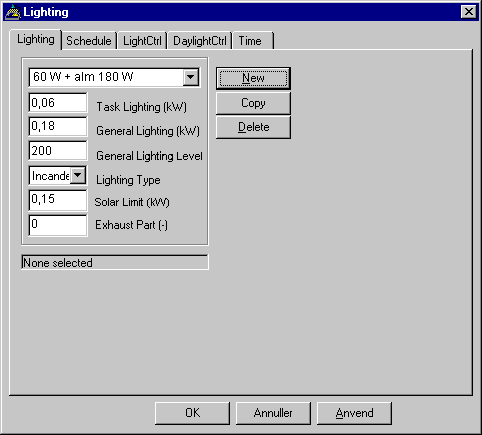
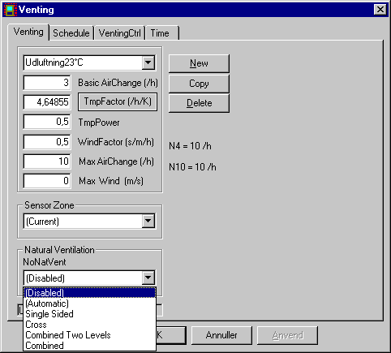
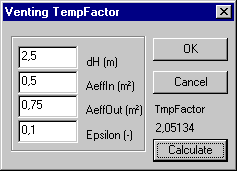
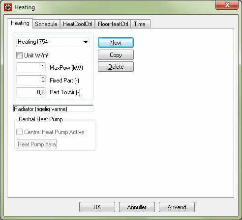
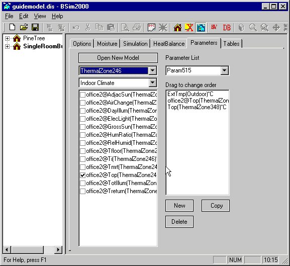

Example 2
The systems of the building
This example carries on with descriptions and data typed in through example 1. It describes how an existing building model is read into the program and how it is copied to a model with a new name. An explanation is then given of how data for the building's systems and loads as well as the connected schedules are typed in.
Open an existing model
The program is started as described in example 1 by selecting the BSim entry from the Programs group at the Start-button. In BSim the entry Open is selected from the File menu or by clicking the Open-icon at the toolbar. This opens a dialog for typing or selecting the path for the model files, i.e. C:\Program Files\Statens Byggeforskningsinstitut\BSim\Models, the program shows a list of building models in the selected path. The model EX1 is selected here and then the program reads the data recorded earlier for the building model EX1 into BSim.
Save model under new name
To save the existing model and still be able to modify data or carry on working on the file, a copy of the model is saved under a new name by first clicking on the Save as entry of the File menu. The path dialog will now reappear, showing the current path as well as the model name EX1. By moving the cursor to the name field, the new name can be typed in as EX2: The new name is confirmed by clicking on the OK-button.
All kinds of heat and moisture loads, systems, equipments, plants, etc. are designated in BSim as "systems", of which the following types are defined: People load, equipment, moisture and infiltration, for which the user defines the temerature variation as well as lighting, venting, heating, cooling and ventilation, for which a form of control can be described which aims to achieve certain indoor climate requirements. The systems for the building models which can be set up in BSim must therefore be defined in accordance with this classification.
Most systems in BSim are attached to thermal zone - except systems connected to a WinDoor, namely solar shading and night shutters. This means that all spaces in a thermal zone vill have the same simulated temperature.
For the simple building, for which data has been recorded in example 1, the actual "systems" are described in the table below:
| System | Description | Control | Time |
|---|---|---|---|
| Person load | 2 people during working hours (8:00–16:00), medium activity | Only 1 person on Thursday–Friday | Weekdays, hour 9–16 |
| Equipment | 2 PCs and a printer, total 185 W | Day 1–3: 6 hours; Day 4–5: 70 % on for 5 hours | Weekdays, hour 9–16 |
| Moisture load | Day 2 and 7 corresponding to 0.45 kg water during one hour | Same for all weeks of the year | Day 2 and 7, hour 7 |
| Infiltration | Air change of 0.5 ACH during working hours | Only 0.2 ACH at all other hours | Weekdays, hour 9–16 |
| Lighting | Task light: 60 W during working hours. General lighting: 180 W as required | General lighting ON when solar gain < 150 W | Weekdays, hour 9–16 |
| Venting | Basic air change 2.0 ACH, independent of temperature difference and wind speed | Window opening when indoor temperature exceeds 25 °C | Weekdays, hour 9–16 |
| Heating | Radiator 4 kW to maintain 21 °C. Outdoor-temperature-dependent power. Set-back | Minimum power 2.0 kW when outdoor temperature > 15 °C. Night set-back 17 °C | Weekdays, hour 9–16; set-back other hours |
| Cooling | None | – | – |
| Ventilation | None (example 2) | – | – |
| Mixing | None | – | – |
Entering data for systems
In order to define the systems, right-click the thermal zone in the tree structure. A dialog of the possible systems which can be described will then appear. More in-depth explanations regarding systems are given in the chapter about systems.

When the dialog is left, by clicking the OK-button, the selected systems are added to the thermal zone in the tree structure.
People load
By right clicking the People load icon in the tree structure, a dialog for definition of the people load is shown. At the first tab the number of persons can be given as well as the activity level of these persons. Click New-button to create a new people load definition and type 2 persons as the number of people. The heat and moisture load from the two persons is defined in the entry People Type. Different types (activity levels) of persons can be selected on the People Type dialog or a new type can be defined by pressing the New-button at bottom part of the dialog. In this case the type Standard can be used.

Schedules
For all systems a schedule must be associated, which describes how the system's operation, control and load vary with time. A schedule is a connection of controls (third tab) and time definitions (last tab) that defines how and when the system is controlled. The schedule is found at the second tab of the dialog.
A schedule must be designated for the defined people load, which expresses that during working hours there are 2 people present Monday to Wednesday, whilst there is only 1 person present Thursday to Friday.
The wizard has created day profiles and time definitions, which can be used in the definition of schedules for systems.
A more detailed description of day profiles and time definitions is found in the relevant sections of the Systems section. The selected day profile defines that the whole (100 %) effect defined in the system (heat load and moisture load) is given off within the relevant time definition. In the actual case, this day profile is valid during working hours Monday to Wednesday. The Day profile is attached the actual schedule by clicking the Apply-button at the bottom of the tab.
As no time definition corresponding to this is to be found in the standard definitions, this must be set up as a new time definition in the building model. This can, for example, be done by copying the time "weekdays 9-16" and modifying the day indication here from 1-5 to 1-3 and at the same time changing the name to "Monday-Wednesday 9-16".
Several controls in the schedule
To describe the load during Thursday and Friday another control must be defined with corresponding time definition. This is done by pressing New-button at the Schedule tab, so the program sets up a schedule with an undefined control ("Unknown") and the time definition.
As control, the day profile "Half load" is selected, whilst the time definition is defined as "Thur-Fri 9-16". The defined time definitions ought to be given names as they are not immediately understandable.
The schedule dialog can be left by clicking the OK-button. It is now apparent from the tree structure that a schedule has been defined for the people load.
Equipment
Data for the equipment is typed in as shown in the following dialog.

The Heat Load is typed in as 0.185 kW and the convective part of the heat transfer to air is set to 0.8, as the majority of the heat produces in the PC is removed by ventilation by means of a small fan. The schedule is defined locally by the following controls and time definitions:
| Day profile: | 100 % | week | day | time | |
|---|---|---|---|---|---|
| 1-24 | time definition: | 1-53 | 1-3 | 9-12 15-16 |
| Day profile: | 70 % | week | day | time | |
|---|---|---|---|---|---|
| 1-24 | time definition: | 1-53 | 4-5 | 9-12 15 |
Moisture
In addition to moisture given off by people, this example also takes into account moisture given off in connection with cleaning twice a week. Data for the moisture load and time definition are recorded as shown in the dialog. As control, the "Full load" type can be selected from the standard definitions.

Infiltration
Via right-clicking the Infiltration icon in the tree structure a dialog can be obtained with data describing how the infiltration can be assumed to vary with the difference between the indoor and outdoor temperatures as well as wind speed.

In the actual case, a constant air change of 0.5 ACH is assumed during working hours and 0.2 ACH outside working hours. The dialog contains a number of standard values which are left unaltered, whilst 0.5 is typed in for the basic air change. "Infilt 0.5-0.2" is typed, as a more descriptive name.
Schedule
During working hours, the schedule can be described by the "Full load" standard definition and the "Weekdays 9-16" time definition.
| Day profile: | 100 % | week | day | time | |
|---|---|---|---|---|---|
| 1-24 | time definition: | 1-53 | 1-5 | 9-16 |
The time outside working hours cannot be described by a single time definition. It is therefore necessary to take advantage of the fact that, during simulation, the program always scans through schedules and the relevant time definitions in the order in which they appear in the dialog. This means in fact that by attaching the time "Always" to a given control, this control will always be in function during all the hours which are not included in the previous time definitions. For the actual infiltration, the schedule can therefore be defined as shown in the next dialog picture. During the time outside working hours, the air change is assumed to be 0.2 h-1 corresponding to 40 % of the air change within working hours.

Lighting
The data given for the lighting is typed in as shown in the adjacent dialog picture. A name is also used here which directly expresses the effect in the actual system. The type of lighting, which is defined via a selection menu, is significant in connection with control according to the lighting level, shown by the parameter General lighting (lux). This is not the case here, as according to the data given, control is carried out according to solar incidence.

The Daylight limit parameter, which is set to 0.15 (kW) indicates the limit for the total solar incidence in zones, above which the ordinary lighting is switched off. The Exhaust part parameter indicates how much of the heat generated by the general lighting that is removed via extraction air. For integrated lighting fittings, where air is extracted directly through the lighting fixtures this can be up to 0.7-0.8 and for fittings which are built into a false ceiling over which air is extracted this may be up to 0.5.
Schedule
The control of the lighting systems can be defined by selecting on of the (in this case) two control tabs. The different control strategies are described in detail in the lighting section. In this case the LightCtrl type of control (tab 3) is selected, which can give a simple control of ordinary lighting according to the total solar incidence in the zone.

In the dialog for the current control, it is possible, via the Factor parameter, to indicate whether the ordinary lighting within a corresponding time definition must be at a reduced power output. The two other parameters enable indication of whether the lighting is to be switched off to avoid excessive heat in the zone. The criteria for the lighting being switched off is that there solar incidence of at least Solar limit, and that with the lighting switched on, the indoor temperature will exceed the level indicated by Temp.max. In the actual case, this control function is not desired, and the highest values shown for both parameters are recorded.
The time definition in the lighting's schedule is "Week-days 9-16".
Venting
It is assumed that the windows will be opened as a measure to prevent excessive indoor temperatures during the summer months. If the temperature exceeds 25 °C the windows will be opened as much as necessary to keep the temperature down to this level. It is assumed that by opening the windows completely, a "basic air change" of 2.0 ACH can be achieved, with a calculated supplement depending on the difference between indoor and outdoor temperatures and the wind speed. The calculation of the possible air change during venting is made according to the formula below.
\[ n_{\text{out,air}} = n_0 + c_t (t_i - t_0)^{tp} + c_w \cdot w \tag{1} \]
n0 is the basic air change rate, ACH
ti and to is the indoor and the outdoor temperature, °C
ct is a constant, which especially depends on the size of the openings and the difference between the inlet and outlet openings
cw is a constant, which especially is dependant on the tightness of the building, the geometry and the location compared to other buildings and the topography / roughness of the ambient
w is the wind speed, m/s
Venting is described in more details in the venting section.
In the current case, the values for the formula constants are assumed to be as shown in the next dialog picture. The constants in the above formula can be difficult to ascertain since they are to a high degree dependent on the building's form, tightness and siting.

In the venting dialog there is an entry to a sub-dialog for calculation of the temperature factor TmpFactor.
In the temperature factor dialog the inlet area where air is assumed to enter the room and the extract area where the air is assumed to leave the room as well as the difference in height between these "openings" are typed in. For a room where venting takes place via one (or more) window(s) these areas can only be estimated. In this example it is estimated that the two openings are each 0.2 m² and it is assumed that air flows out of the top of the window opening whilst air flows in at the bottom of the window opening.

In the temperature factor sub-dialog, the value for the efficiency, 'epsilon', is typed in, which expresses how well the inlet air is mixed with the air in the room before it leaves the room again. This factor is also difficult to determine, but with venting through a window, there will be an unavoidable "short circuit" between air taken in and air passing out, and epsilon is therefore set here as 0.6.
Schedule
Venting is assumed only to be carried out during working hours, and the time definition will therefore be "Weekdays 9-16".
The control is described in a simple dialog, where the temperature (set point) 25 is typed in. The other parameter, Factor (between 0 and 1) is used as in several other controls to indicate, that the appurtenant time definition, there is only a share of the "nominal" capacity available (expressed here as the air change).
Heating
The thermal zone is heated by a thermostat-controlled radiator with a maximum power output of 4 kW, which is available at the design winter temperature of -12 °C. The heating system is assumed to have a "supply pipe temperature" which is controlled according to the outdoor temperature, so that the power available is regulated downwards with rising outdoor temperature until the outdoor temperature is 15 °C, where the effect is 2 kW. At higher outdoor temperatures the available power is 2 kW (when within the time definition), while it is 0 at hours outside the time definition(s) corresponding to the heating system being shut down.
The maximum power of 4 (kW) is typed into the MaxPower field of the heating dialog. Furthermore, it must be defined in the Fixed part field, how much of the available power that cannot be controlled, e.g. due to heat emission by pipe losses. This is set here as 0. The third parameter in the dialog Part To Air indicates how much of the radiator's heat is emitted by convection to the air in the room. The convection share of the heat emission from equipment and heating seldom ought to be set lower than 0.5, and in this case the value 0.7 is used.

Schedule
The control part of the radiator's schedule defines the thermostat's set point and the regulation curve for the heating power available. By clicking the control tab (tab no. 3) in the heating dialog, the dialog picture shown below is obtained.
This type of control is called HeatCoolCtrl which is both a heating and a cooling control, and the name given, is replaced here by the name "Rad-reg 21°C". The factor parameter can be used to indicate a fixed, only seasonal control of the radiator, e.g. a manually served shunt valve, which is assumed to be regulated according to months or weeks in the heating season. The parameters in the remaining fields are defined in the "supply pipe temperature control" described above.

The time definition which defines when the control shown is to function is typed in here as weeks 40-14. As there is temperature cooling outside working hours, days are set to 1-5 and hours to 7-16. Starting up the heating a couple of hours before working hours (hour 7) is intended to ensure that the temperature has reached the desired set point, 21 °C, when working hours start (hour 9).
Night and weekend temperature set-back
In order to define temperature set-back outside working hours, a new schedule for the radiator must be defined by clicking the New-button on the Schedule tab. The new schedule must contain a control for the remaining part of the heating season. As the program always runs through the schedules and time definitions in the order in which they occur in the dialog, the time definition can be defined as: week 1-14 40-53, day 1-7 and hour 1-24. The control can be defined by copying the control already defined and then in the new control alter the set point to 17 (°C).
In this example, the three system types: 'Mixing', "Cooling" and "Ventilation" are not used, and data input for the building's systems is therefore finished.
Documentation of data for the model
Before saving the data or exiting the program or carrying out a simulation, the building model ought to be checked for possible errors or deficiencies. First, press the ModelList icon at the toolbar to control all data entered for the model. If a message comes regarding missing or incomplete data then these must be typed in or corrected. It is possible to jump directly to most faulty objects in the tree structure by double clicking the stop-sign of the errous object in the model list.
Save model
The model is saved by returning to the main menu and selecting the Save entry of the File menu.
Simulation
Simulation of the building, described in example 2, can be carried out before leaving the program, or later, when the building model is read into BSim again. In order to carry out the simulation, select the tsbi5 icon from the toolbar or the entry tsbi5 from the View menu, and the simulation dialog will appear.

Options
Before simulation can be performed, a simulation period must be defined. Two dialogs can be obtained via the First Day and Last Day entries to define the start and the stop date of the simulation. The second group of options on the options tab offers the possibility setting different options that influence the simulation time and the accuracy of the simulations. In the group Stat, hour temperature limits for statistics regarding the indoor temperature which is calculated during simulation can be set. In this case data is selected as shown in the dialog picture above.
Time log and parameter selection
Save in Log is a designation for the "log" (list or register) of hourly values which are continuously registered whilst simulation is taking place. As a great number of parameters are calculated hourly during simulation, it is important to specify which of these are to be saved for analysis later.
The first group in the list is "Outdoor climate" which contains all the outdoor climate data used as well as calculated values for solar azimuth and solar height. By putting a tick-mark on the group these data are saved on hourly basis for later analyses. In a section of the description of tsbi5 an overview of all parameter names and their meaning are shown.
In the ThermalZones data group, parameters relating to the indoor climate are stored, i.e. indoor temperature, operative temperature, air change rate, etc.
Start simulation
Simulation is started by clicking the Start-button on the Simulation tab. Before the actual simulation is begun, the model is checked to see whether there are any errors in the building model's data and if this is the case, a message will appear. Linke in the ModelList one can double-click the line to jump directly to the errous object in the tree structure.
When the model is complete, simulation starts with BSim calculating and writing on the screen the recommended number of time steps per hour, which will normally be determined by a thin layer with small mass or a layer with high thermal conductivity in one of the model's construction types. If the calculated minimum number of time steps is larger than the actual, the program will ask if the calculated or the actual number of time steps are to be used. If the calculated minimum number of time steps is greater than 6-10, consideration should be made as to whether the relevant layer can be left out or just defined as an extra insulation in the construction.
The simulation starts with the first of the given dates in the simulation period, using the first day in the period repeatedly until stability, expressed as te difference between the indoor temperature (in hour 15, in each thermal zone) in two successive day loops do not differ more than 0.1 °C.
During the simulation a graph with the ambient temperature and the operative temperature of each thermal zone is shown. This is done to offer the possibility of terminating the simulation if the results is wide of the mark.
Termination of the simulation
The simulation can be immediately interrupted by clicking the Stop-button. Then the simulation is temporarily halted and the program request confirmation that the simulation is to be interrupted.
Results
After the simulation, the results can be analyzed in various ways via the tabs: HeatBalanace, Parameters and Tables.
Heat balance for thermal zones
By selecting the HeatBalanace tab, an overview of the heat balance for the whole building or the individual thermal zones can be obtained week by week, month by month or for the entire simulation period, depending on the selection in the first selection-menu (to the top left of the dialog). The heat balances are calculated from daily summations, which is always stored during the simulation.
In this case 'month' is selected as 'Time scale', and the heat balance is calculated on monthly basis.
The meaning of the abbreviations in the heat balance, i.e. qHeating, qCooling, qInfiltration etc. are found in the list of parameters. The numbers expresses the sum of day contributions for each parameter in the total balance within each period (week, month or entire simulation period). In more of the parameters (infiltration, transmission, mixing and ventilation) both positive and negative numbers can be found if they adds or subtracts to the heat balance.
Simple statistic for temperatures and air change
The number number of hours with the operative temperatures above or below selected temperature levels (see Stat, hour on the Options tab) are stored during the simulations. Further the average outdoor and indoor operative temperature and the air changes rate are calculated for each thermal zone.
As temperature limits the default values are: 20 °C as lower limit (count of number of hours with operative temperature below 20 °C) and 21 °C, 24 °C and 26 °C as the upper limits (count of hours with operative temperature above 21 °C, 24 °C and 26 °C respectively). The temperature limits can be changed by the input fields in Stat, hour on the Options tab, but in advance of a simulation.
Energy consumption in ventilation systems
The energy balance is the (net) energy consumption for heating, cooling, equipment and lighting. The contribution qVentilation expresses further how the air from an eventual ventilation system influences the energy balance. The balance, on the other hand, do not show the amount of energy consumed for treatment and transportation of the ventilation air. Because of this the energy balance also contains the energy transfer in the individual parts of the ventilation system: FanPow = Fan power, HtRec = heat recovery, ClRec = cooling recovery, etc. Together with the heat balance, these numbers expresses the total energy balance for each thermal zone. In this case no ventilation system has been defined - so all energy transfers are zero.
Heat balance for the building
In the third (top button row) selection-menu it is possible to select to see the heat balance for the entire building or for the individual thermal zones in the selected time scale: Week, Month or Year. In this case the building heat balance is equal to the thermal zone heat balance as only one thermal zone has been defined.
Parameters
On the Parameters-tab the parameters to analyze on hourly basis can be selected, which part of the simulation period to analyze and which part of the building (which thermal zones) and if the results are to be shown as numbers or as graphics.
On the Parameters tab no list with parameters are exists. This only applies that no lists with parameters to analyze have been defined yet. By clicking the New-button, a new parameter list is created and the desired parameters can be added to the list. By clicking the top selection-menu on the tab, it is possible to select from which thermal zone to pick the results to the parameter list. The individual parameters are grouped into different groups, which is selected in the second selection-menu of the tab. When the appropriate thermal zone and the appropriate group of parameters have been selected a list of parameters for that zone and group is revealed in the large window at the bottom left of the dialog. By putting at tick-mark at the left of each desired parameter, it is transferred to the parameter list window (bottom right). In this case first click the thermal zone in the top selection-menu and then on the IndoorClimate group in the second selection-menu. In the bottom window the parameter Top is selected by putting a tick-mark next to its name. Normally there will be more than one thermal zone i a model, and therefore the parameter is identified both by its name and the name of the thermal zone where it belongs, in this case 'Box-room'.

Next, click the mouse on the parameter group 'Outdoor', from which the parameter "ExtTmp" is selected, which is the outdoor temperature. Finally, the name on the parameter list is written over with the name "Temperatures". The hourly values are shown in tabular and graphic format on the Tables tab.
Parameters from several building models
The defined parameter list "Temperatures" now includes to parameters, namely the operative temperature in the zone "Shoebox" and the outdoor temperature from the climate data, or the virtual zone "Outdoor".
It is possible to define parameter lists holding parameters from different models for which simulations as been carried out. By clicking the Open New Model button, a dialog is opened for selection of other models (only in the current path) with result logs, from where parameters can be selected. This will often be interesting when comparison of temperature and energy conditions of two alternative designs of a planned building are to be discussed.
Normally, several parameter lists are defined for each building model, with choice of parameters depending on what is of particular interest in the case in question. Often, a list with all links in the energy balance as well as indoor temperatures, if any, will be able to provide important information regarding which conditions have the greatest influence on the dimensioned conditions. In this example, a second parameter list may be useful when reviewing the results, e.g. named "Energy balance", and containing in all 9 parameters:
| Parameter | Beskrivelse |
|---|---|
| qHeating | Power output from heater (radiator), kW |
| qInfilt | Heat loss (or gain) by infiltration, kW |
| qVenting | Heat loss (or gain) by venting, kW |
| qSunRad | Total net solar radiation through windows in the zone, kW |
| qPeople | Heat emitted from people in the zone, kW |
| qEquipment | Heat emitted from equipment in the zone, kW |
| qLighting | Power input and heat emitted from lighting in the zone, kW |
| qTransmis | Heat loss (or gain) by transmission, kW |
| Ti | Indoor air temperature, °C |
Period
In the results table on the Tables tab a number of selection-menus and buttons are found at the top. The functionality of these buttons are found in the section about the Tables tab.
Hour values
The graphics shows that the indoor temperature reaches 21 °C at hour 9 as desired.
On the other hand, it is more interesting to see whether this is also the case after a weekend set-back in a cold period. Therefore "leaf" through the days until the following Monday, in this case 8th January.
The days around 7th-8th January are one of the coldest periods of the year and the results show that the indoor temperature first reached up to 21.0 °C at hour 11. If the requirement for 21 °C is to be met, a decision must be taken as to whether a larger radiator power output should be installed, or whether the temperature should not be allowed to fall right down to 17 °C during the coldest periods.
Results in graphic format
The button offers the possibility of selecting to show te results as curves for temperatures, powers, etc. as a function of time. The program now shows the temperature curve for the first day in the result period. Clicking the arrow-buttons at the bottom of the tab 'leafs' through the result curves to January 8th. The curves show how the indoor temperature rises from the level of 17 °C during the cooling period to the set-point of 21 °C, which is not reached until hour 11. By right-clicking in the graphic, a menu is shown, allowing to copy or edit the graphic results. The results can be read and reproduced by other Windows-based programs, e.g. word processing and spread-sheet programs.
In the section about the Tables tab of tsbi5 a more detailed description of the results analyses and links to description of the possibilities for manipulating the graphics are found.
Save model and exit BSim
The model is now saved via the File entry in main menu, by clicking on the Save field. When the model is saved, two files are created: one file containing all the building model's data (file name: EX2.DIS) and another file which contains data regarding simulation and result analysis (simulation period, hour-log parameters, parameter lists etc.).
Description of data input for external shadings and modifying the model for improvement of the building indoor climate and energy consumption is described in example 3, where you can continue directly.
See also: